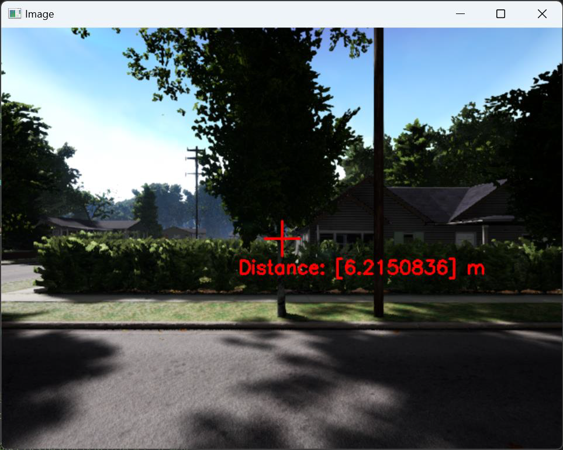

1. 功能概述
1.1 支持的功能操作
- 传感器输出 测距传感器通过向当前传感器朝向发射一条射线，测量目标物（TargetCopter）与传感器之间的距离。如果测距传感器附加在其他传感器上，则输出图像中心目标的距离值。
- 应用场景
- 无人机避障：实时检测前方障碍物距离并调整飞行轨迹。
- 地形感知：在低空飞行中测量地面高度，辅助地形跟随模式。
- 目标捕捉：结合视觉信息，用于精确定位目标物与无人机的相对位置。
1.2 使用示例
配置文件添加传感器 以下是配置文件 Config.json 的示例代码，用于添加 RGB 图像传感器：
{
"VisionSensors": [
{
"SeqID": 0,
"TypeID": 5, //测距传感器
"TargetCopter": 0, //这里对应所属传感器的seqID
"TargetMountType": 4, //安装在其它传感器上
"DataWidth": 640, //无效
"DataHeight": 480, //无效
"DataCheckFreq": 30,
"EularOrQuat": 0,
"SendProtocol": [1, 0, 0, 0, 0, 0, 0, 0],
"CameraFOV": 90,
"SensorPosXYZ": [0, 0, 0],
"SensorAngQuat": [0, 0, 0, 0],
"SensorAngEular": [0, 0, 0],
"otherParams": [200, 0, 0, 0, 0, 0, 0, 0, 0, 0, 0, 0, 0, 0, 0, 0] //测距传感器能够测量的最大距离
}
]
}
对于测距传感器，DataWidth以及DataHeight两个参数无效，而otherParams[0]表示测距传感器能够测量的最大距离。
需要注意的是当TargetMountType为4也就是安装在其他传感器上，则Config.json文件中需要先配置被安装的传感器，并将” SensorPosXYZ”和” SensorAngEular”全部设置为0。
Python 调用传感器接口 取图显示相关代码：
vis = VisionCaptureApi.VisionCaptureApi() # 创建一个视觉传感器实例
vis.jsonLoad() # 加载Config.json中的传感器配置文件
isSuss = vis.sendReqToUE4() # 向RflySim3D发送取图请求
vis.startImgCap() # 开启取图
vis.hasData[i] # 图片i数据是否更新
vis.Img[i] # 图片i数据（像素矩阵）
obj_distance = vis.DistanceSensor.Distance # 获取距离传感器的距离 obj_distance
cv2.line(img, (center_x - crosshair_length, center_y), (center_x + crosshair_length, center_y), (0, 0, 255), crosshair_thickness) # 使用cv2.line 绘制水平和垂直的十字准线
cv2.putText(img, distance_text, (center_x - 50, center_y + crosshair_length + 20), cv2.FONT_HERSHEY_SIMPLEX, 0.7, (0, 0, 255), 2) # 使用 cv2.putText 在图像上绘制距离信息，位置在图像中心下方，颜色为红色 (0, 0, 255)
cv2.imshow('Img'+str(i),vis.Img[i]) # 显示图片i图像
实时更新相机参数（位置、焦距、角度、装载飞机和形式）：
vs = vis.VisSensor[0] #获取第0号相机基本参数
# 修改其中的可变部分，只修改需要改变的部分即可
vs.TargetCopter=1 #修改视角绑定的飞机ID
vs.TargetMountType=0 # 修改视角绑定类型，固连飞机还是地面
vs.CameraFOV=90 # 修改视角的视场角（焦距），可以模拟对焦相机
vs.SensorPosXYZ=[0.3,-0.15,0] # 修改相机的位置，可以调整相机初始位置
vs.SensorAngEular=[0,0,0] # 修改相机的姿态，可以模拟云台转动
vis.sendUpdateUEImage(vs) # 发送更新数据
例程链接
1.3 现实中的可见光传感器
- 硬件示例
- **激光测距模块**：如常见的 Lidar 模块（例如 RPLidar、TFmini 等），能够通过激光脉冲测量目标物体的精确距离。
- **超声波传感器**：例如 HC-SR04，通过发射和接收超声波测量物体距离。
- **深度相机**：如 Intel RealSense 系列，能够结合 RGB 数据测量深度。
2. 传感器配置
2.1 传感器安装
| 参数名称 | 取值范围 | 含义 |
| TargetMountType | 0: 固定载具上（相对几何中心）；1: 固定载具上 （相对底部中心）；2: 固定地面上（监控）；3：相对地面坐标系的吊舱相机，固定飞机上，但相机姿态不随飞机变化（地面坐标系）；4：将传感器附加到另外一个传感器上 | 决定传感器的所属载体对象及安装方式。 |
| TargetCopter | 目标传感器ID（默认为0）;目标实体对象 ID (默认 1） | 决定传感器安装方式后，选择目标测量对象ID。传感器固定在载具或地面上时，该值对应目标载具或其它实体对象的CopterID；传感器固定在其它传感器上时，该值对应目标传感器**SeqID**。 |
| SensorPosXYZ | [x, y, z] (单位：米) | 相对于传感器所属载体对象的安装位置。 |
| EulerOrQuat | 0: 欧拉角；1: 四元数 | 选择安装姿态的表示方式。 |
| SensorAngEular | [roll, pitch, yaw] (弧度) | 安装姿态，欧拉角方式表示。 |
| SensorAngQuat | [q0, q1, q2, q3] | 安装姿态，四元数方式表示。 |
2.2 网络通信配置
2.3 传感器技术规格
| 技术参数 | 配置值 | 说明 |
| SeqID | 0 | 每个传感器在 RflySim3D 内的唯一编号。若设为0，将自动确认序号并递增排序 |
| TypeID | 5 | 传感器类型，测距传感器。 |
| DataHeight | 无效 | 对测距传感器无意义。 |
| DataWidth | 无效 | 对测距传感器无意义。 |
| DataCheckFreq | 30 Hz | 数据刷新频率，默认 30Hz，最大支持取决于RflySim3D刷新率。 |
| CameraFOV | 90° | 测量视场角（默认为90），单位：度。 |
| otherParams[0] | 200 | 测距传感器能够测量的最大距离（默认为200），其余参数为预留位 |
{kind=link}